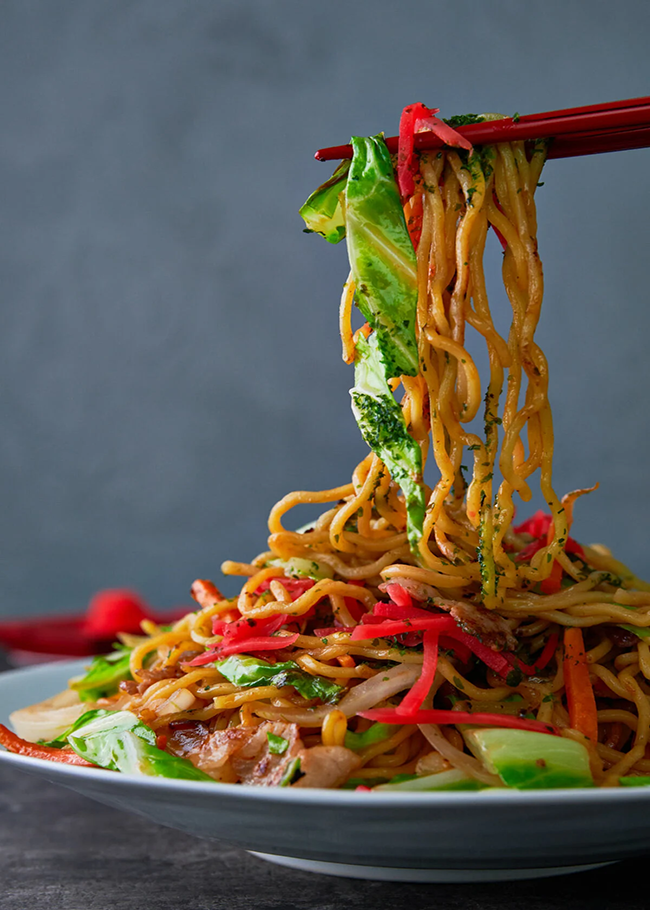

Classic Yakisoba

Yakisoba is a classic Japanese stir-fried noodle dish that's seasoned with a sweet and savory sauce similar to Worcestershire sauce. Use any proteins you like: pork, chicken, shrimp, or calamari. For vegetarians, just swap it with tofu or shiitake mushrooms.
INGREDIENTS
- Fresh yellow noodles (230 grams)
- Vegetable oil (2 Teaspoons)
- Pork Belly (100 grams)
- Cabbage (100 grams)
- Onions (100 grams)
- Carrot (60 grams)
- Worcestershire sauce (2 Tablespoons)
- Ketchup (1 Tablespoons)
- Oyster (1 Tablespoons)
- Honey (1/2 Tablespoons)
- White pepper (1/4 Tablespoons)
- Aonori (1 Tablespoons)
- Benishoga (1 Tablespoons)
INSTRUCTIONS
- Boil the noodles according to the directions on the package. When the noodles are done, drain and rinse thoroughly with cold water, using your fingers to agitate the noodles. Drain as much water off the noodles as possible by using a dropping motion with both hands and yanking up suddenly. Toss the noodles with 2 teaspoons of vegetable oil to keep the noodles from sticking together.
- Prep the vegetables and make the sauce by whisking together the Worcestershire sauce, ketchup, oyster sauce, honey and white pepper in a small bowl.
- Heat a large heavy-bottomed frying pan or griddle over high heat until hot. Add 1 tablespoon of oil along with the pork belly or bacon. Fry until the fat from the pork has started to render out.
- Add the carrots, onions, and cabbage and stir fry using two spatulas until the vegetables are vibrant in color and starting to wilt (they don't need to be fully cooked through yet).
- Add noodles and toss with the oil in the pan. If you notice they are sticking, add some more oil directly onto the noodles.
- Drizzle the sauce evenly over the noodles and continue tossing and frying until the noodles are a uniform color and you can smell the sauce starts to caramelize.
- Plate the yakisoba and sprinkle with aonori and benishoga to garnish.